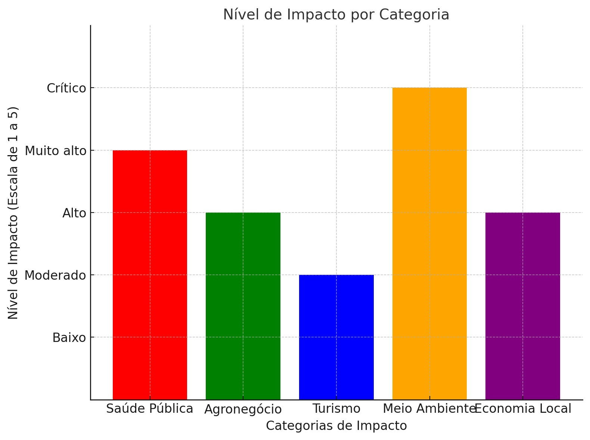

Impactos Ambientais:
As queimadas representam uma grave ameaça ao meio ambiente, com consequências que vão além da destruição da vegetação.
A perda da biodiversidade, a degradação do solo, a poluição do ar e as mudanças climáticas são apenas alguns dos impactos causados por esses eventos
Impactos Sociais e Econômicos
Além dos danos ambientais, as queimadas prejudicam a saúde pública e a economia local.
